This compilation gathers everything the crew has been able to piece together — public record, tabloid gossip, underworld whisper, and a few sources that shouldn't exist — on five names that keep surfacing in Fate City's night. Treat anything sourced to Nocturnal with suspicion. Treat anything sourced to the Agency with more.
“Every vote has a price. I just happen to know everyone’s.”
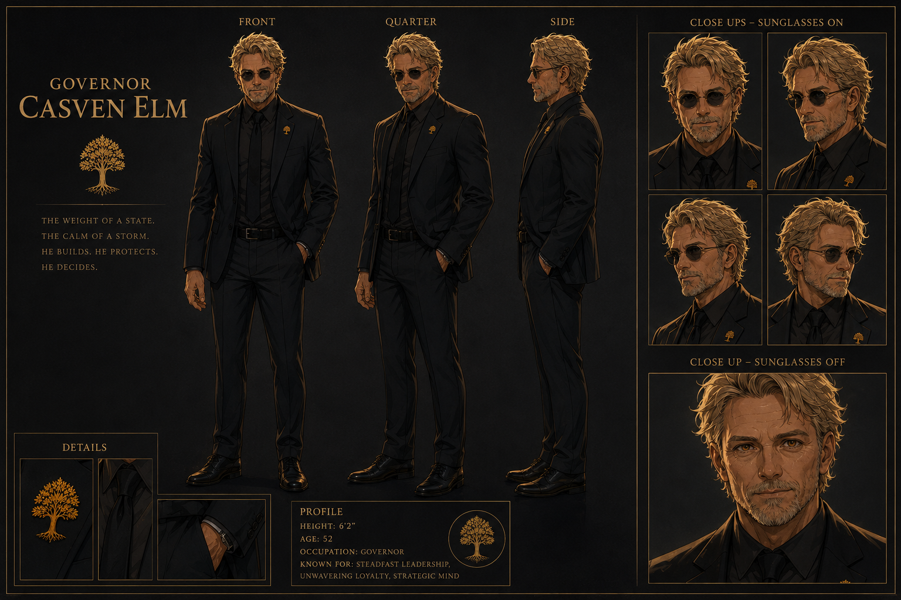
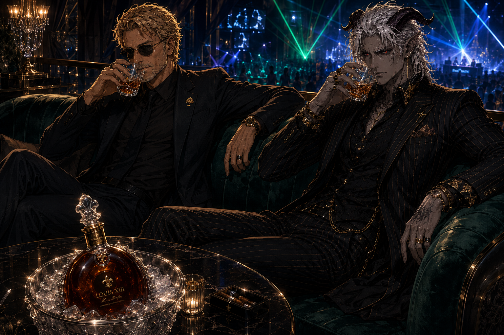
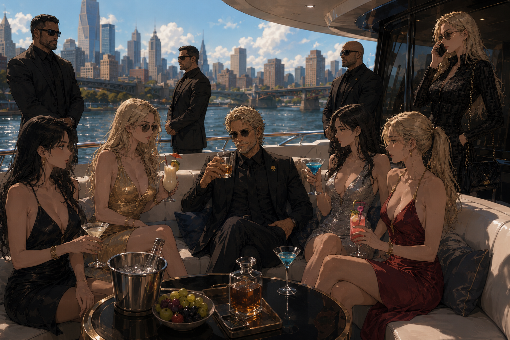
Casven Elm did not win his election so much as inherit it. Every credible opponent withdrew in the final weeks of the race, citing “personal reasons” that nobody in the press pool believed for a second. He took office on a wave of relief rather than enthusiasm — the relief of a city that just wanted the campaign to be over. He has governed exactly the way that start would suggest: smoothly, expensively, and with an unnerving lack of friction.
What makes Elm dangerous is that none of this requires him to be cold. He’s warm, easy to talk to, genuinely curious about whoever he’s speaking with — the kind of man people walk away from feeling like they were truly listened to. That warmth was never an act he learned for politics; it’s simply who he is, and it makes the rest of what he does almost impossible to resent in the room, even when you know better the moment you’ve left it.
Elm doesn’t pretend money isn’t the language of Fate City politics. He speaks it fluently and without embarrassment. Permits get approved. Investigations lose momentum. Zoning maps redraw themselves around the right donors. None of it is ever traceable to him directly — that’s the whole skill.
Elm is unmarried, and has no visible interest in changing that. What he wants instead, consistently, is to be seen — at the right premiere, the right gala, the right photo op, on the arm of someone whose presence does more talking than he ever has to. His current preferred companion is Elarthis Löfgren, and the arrangement is never discussed in terms that would make it sound like what it is. He doesn’t ask. He invites. If she declines, the next permit for her production happens to find its way into a slower queue, for reasons nobody can quite identify. If she accepts, the tabloids speculate about what’s behind it, and Elm will neither confirm nor deny anything about his or her personal life — a silence that costs him nothing and could cost her everything, depending on how the story gets told.
This is, in miniature, how Elm exercises power across the entire city: never a threat, never a demand, just an invitation with a consequence quietly attached to declining it.
The rumor that won’t die is that Elm’s mass-resignation miracle was arranged, not earned, and that the arranging was done by people who run nightclubs for a living. Nothing has ever stuck to him. No ledger, no recording, no witness who stays a witness for long. Whether that’s because the rumor is false or because Elm is simply better protected than anyone he might owe a favor to is the kind of question that gets people quietly reassigned. He has, on more than one occasion, been seen relaxed and unguarded in the company of Meros Zarzer — though “seen” is doing a lot of work in that sentence, since neither man has ever been caught anywhere a camera could prove it meant something.
I don’t do favors. I do investments. The return is just rarely cash. Gov. Casven Elm, fundraiser remarks (off the record, somehow on the record anyway)
The most beautiful woman in Fate City has never once taken the safe route home.
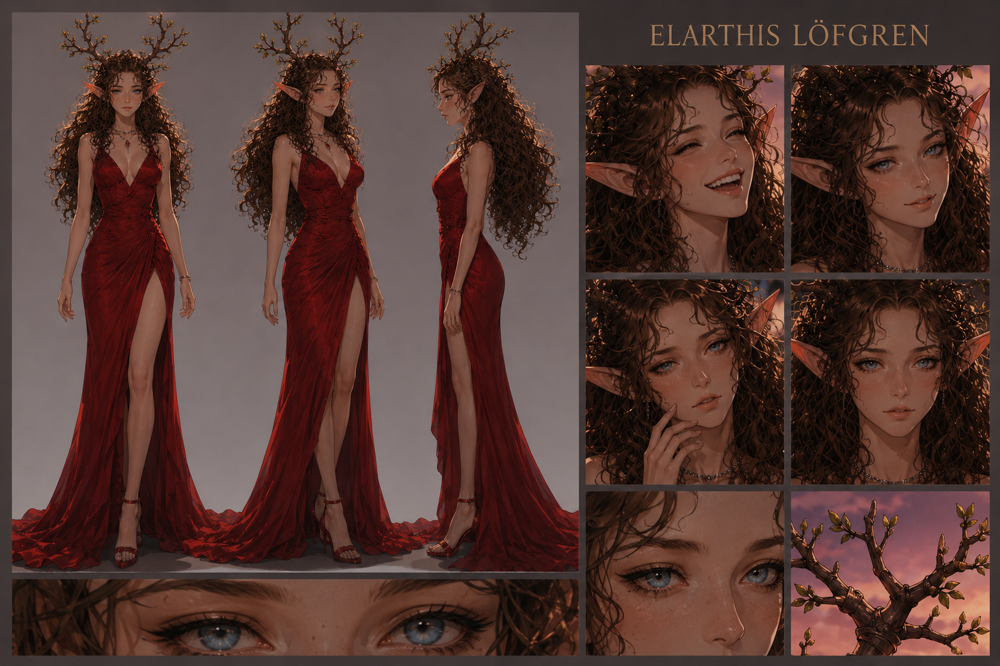
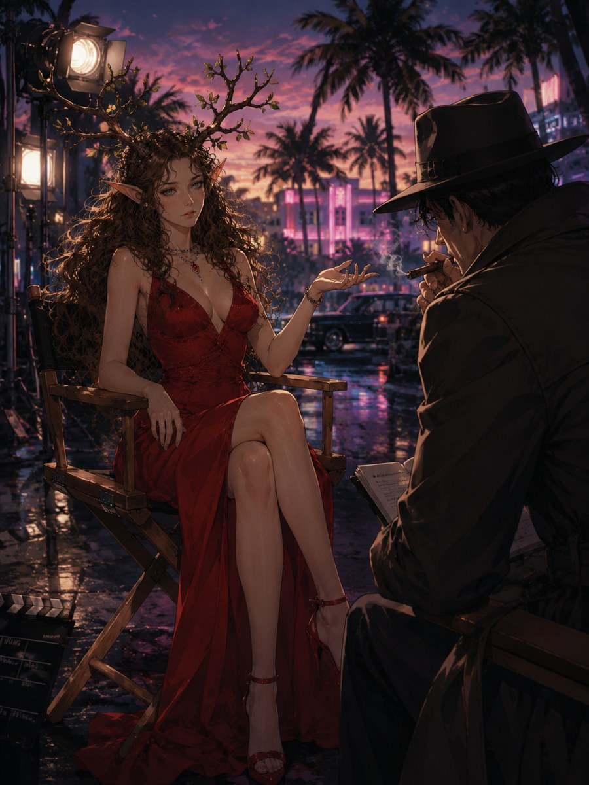
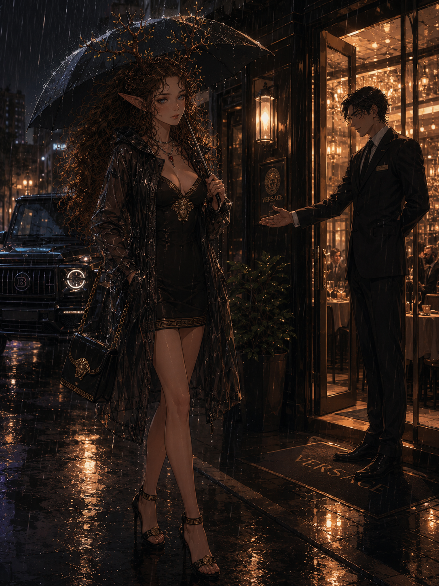
Elarthis Löfgren is, by every measurable industry metric, at the top of her field. Three leading roles in the last two years, a face that stops traffic — literally, on at least one documented occasion — and a fanbase that treats her like royalty. By every measurable personal metric, she is bored out of her mind and actively trying to fix that.
She free-climbs hotel façades for fun. She’s been photographed in the passenger seat of cars going speeds that would end most acting careers permanently. Her publicist has resigned twice and come back twice, presumably because the money is better than the ulcer is bad.
Nobody who works with Elarthis describes her as reckless to her face — only behind her back, and only once, because she has a memory for that sort of thing. What she actually is, by every account that doesn’t come from a tabloid, is a woman who has had every comfort money can buy and discovered that none of them feel like anything. The night life of Fate City — the racing, the rifts, the rumors of demons — isn’t a guilty pleasure for her. It’s the only thing left that feels real.
There is exactly one part of Elarthis’s life she does not control, and it has nothing to do with stunts or speed. Governor Casven Elm invites her to the premieres, the galas, the rooms where photographs get taken — and an invitation from Elm is never quite a request. Decline, and the next permit for her production finds its way into a slower queue, for reasons nobody can quite identify. Accept, and the tabloids do the rest of the work themselves, speculating about a relationship Elm will neither confirm nor deny — a silence that costs him nothing and follows her everywhere. It is possible, and increasingly likely to anyone who watches her closely, that her appetite for risk is the one place she gets to choose the danger herself.
Everyone keeps asking if I’m trying to get myself killed. I’m trying to find out if I can still feel anything before I do. Elarthis Löfgren, late-night radio interview
“I didn’t get here by being patient with people who waste my time. I got here by not having any.”
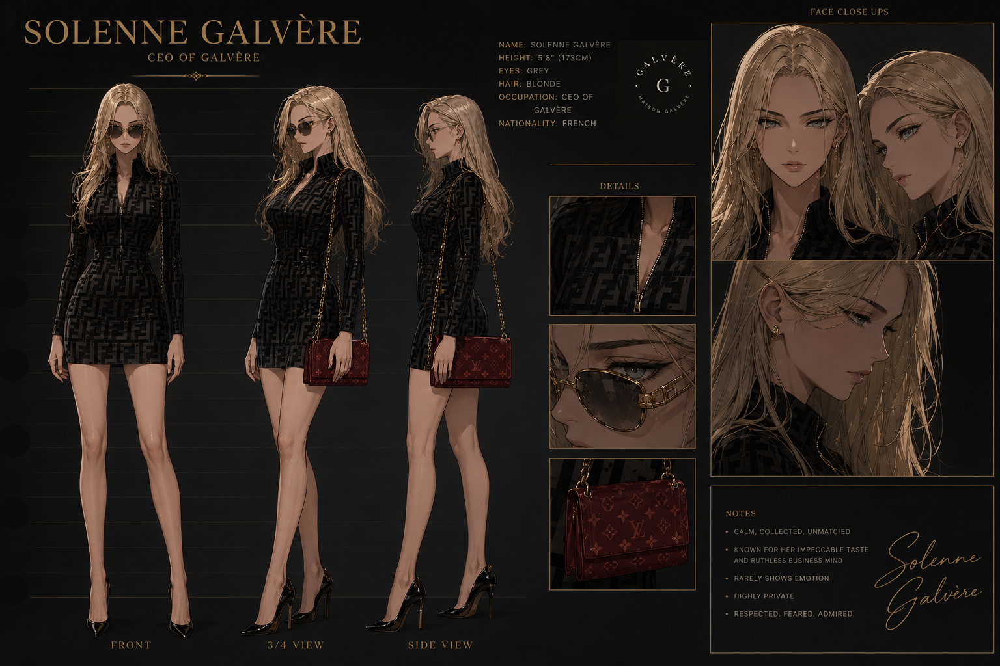
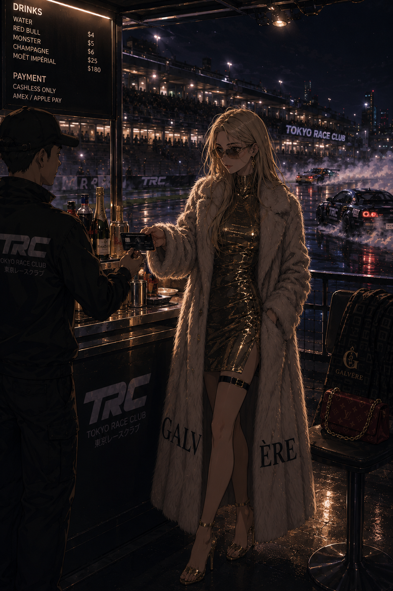
Solenne Galvère built her brand from nothing into one of the names that defines what “money” looks like in Fate City, and she did it on a schedule that left no room for anyone who couldn’t keep up. She is not cruel for the sake of it — she simply has no patience left over for people, ideas, or meetings that don’t move Galvère forward. Everyone who has ever pitched her something and watched her check the time mid-sentence understands exactly where they stand.
She does not collect friends. She collects assets — designers, faces, locations, moments — and she is extremely good at recognizing one before anyone else does.
One thing, and one thing only: whatever helps Galvère. Charity, scandal, glamour, controversy — all of it is raw material if it photographs well and sells product, and all of it is noise if it doesn’t. She has used tragedy as a campaign backdrop without blinking and dropped a decade-long brand ambassador over a single bad headline. Both decisions made business sense to her, and that’s the only kind of sense she’s interested in making.
Tell me what it’s worth or get out of my office. I have eleven minutes and you’ve used four of them. Solenne Galvère, attributed by a former Galvère intern
The city’s two licensed paths to power both answer to someone. Nocturnal answers to no one but Meros.
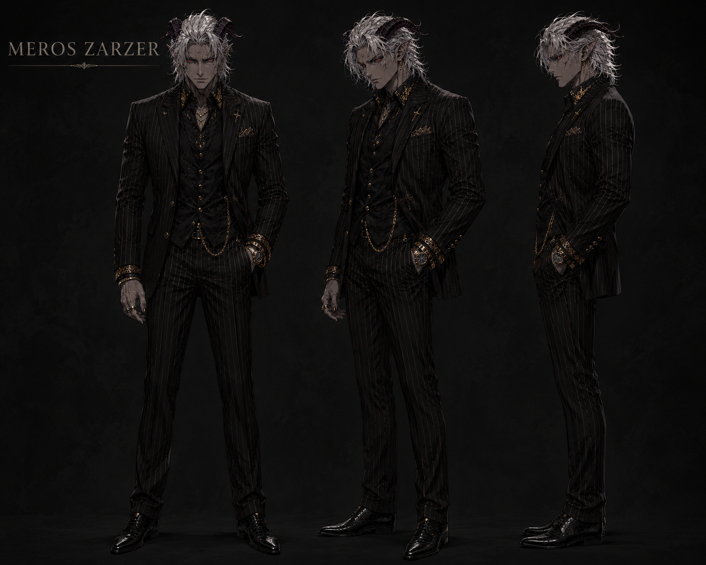
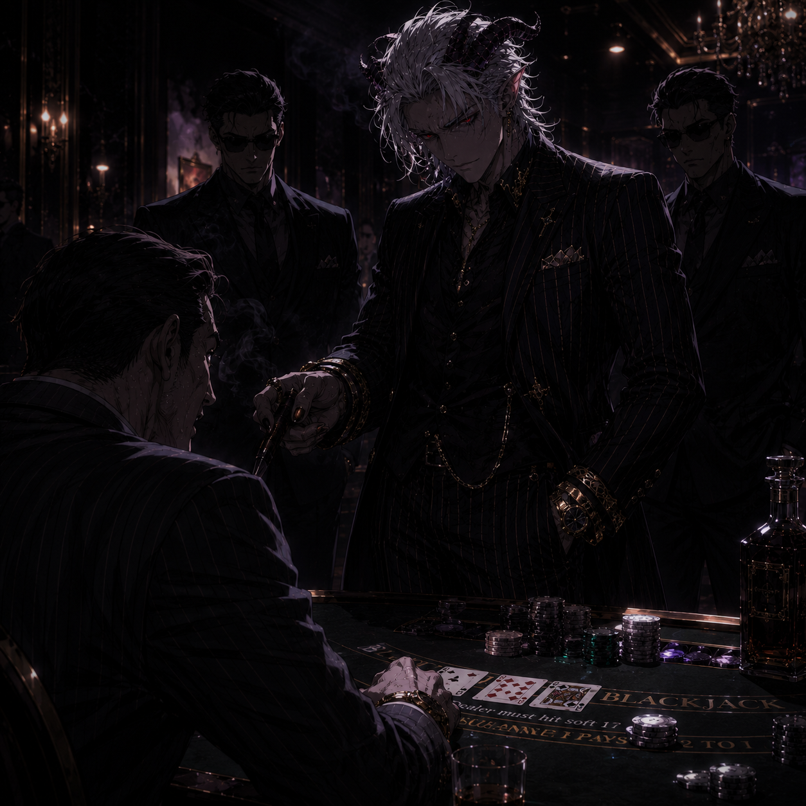
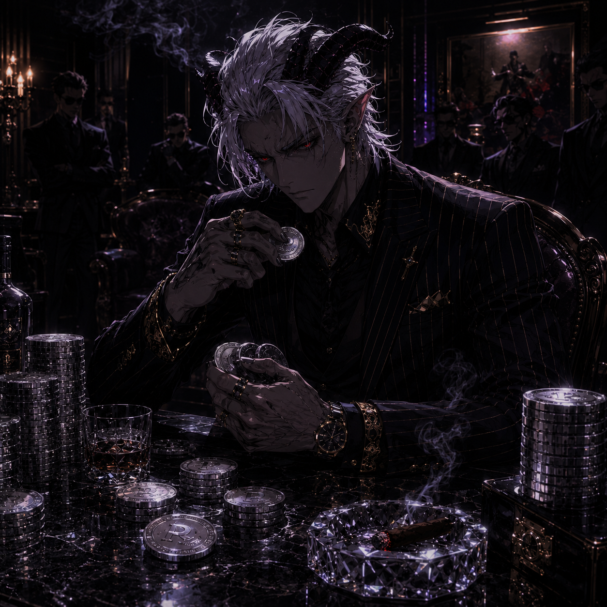
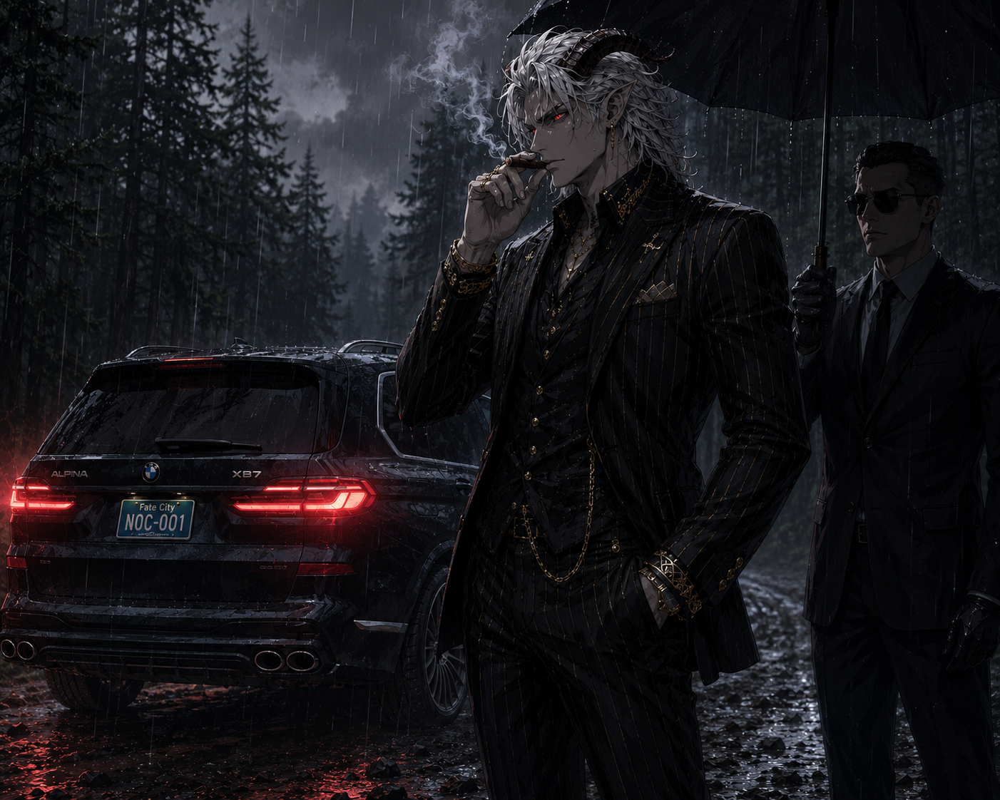
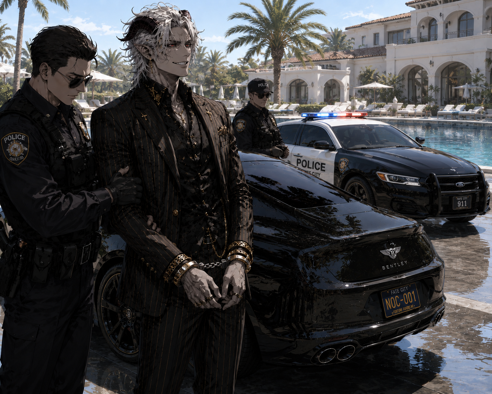
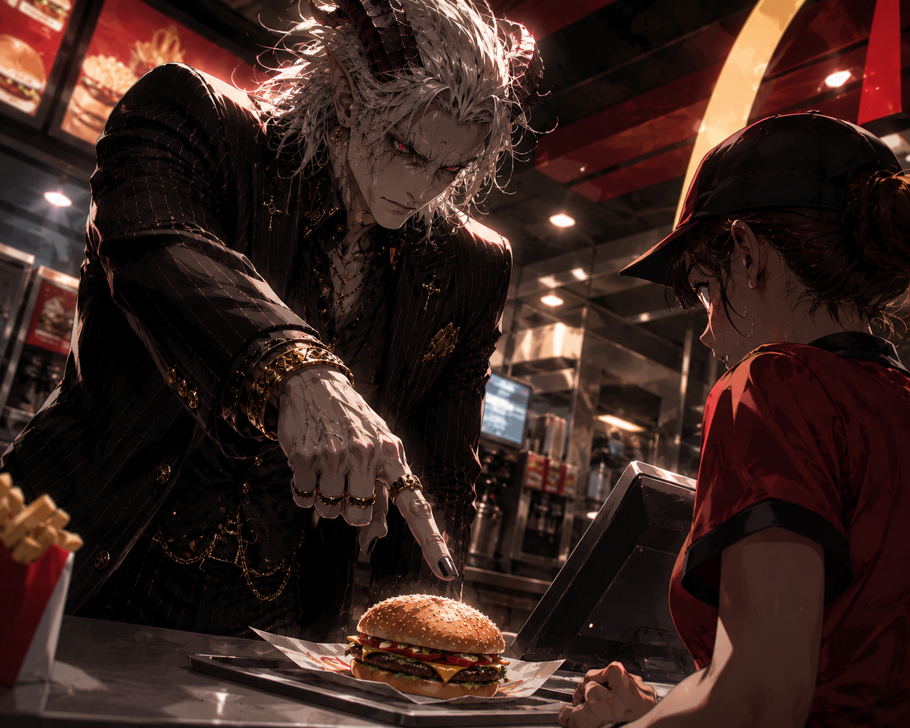
Meros Zarzer runs Nocturnal the way a conductor runs an orchestra — rarely touching an instrument himself, never once losing the room. Nocturne, the club that carries his organization’s name into the open, is the legitimate face: velvet rope, gold trim, a line around the block every night the city has lights left to shine. What happens underneath it, and in a dozen other rooms across Fate City that don’t have a sign out front, is the actual business.
He is one of the only major players in the city who has never bothered to deny what he is. There’s no PR campaign to manage when everyone already knows, and knowing doesn’t change the fact that half the city’s economy — legal and otherwise — runs through something he owns a piece of.
Officially, anyone with power in Fate City has two roads: the Agency, or law enforcement. Unofficially, there has always been a third — and Meros built it. Nocturnal offers protection, resources, and a place to exist for the unlicensed and unregistered, in exchange for loyalty, cuts, and the occasional job nobody licensed would touch. It is not safety. It is a different shape of leash.
The Agency thinks they invented control. The cops think they invented order. I just never bothered pretending it was anything but a deal. Meros Zarzer, overheard at Nocturne (source: a bartender who didn’t want their name used)
Pop’s brightest new “bad girl”, and the night life of Fate City is more than happy to oblige her.
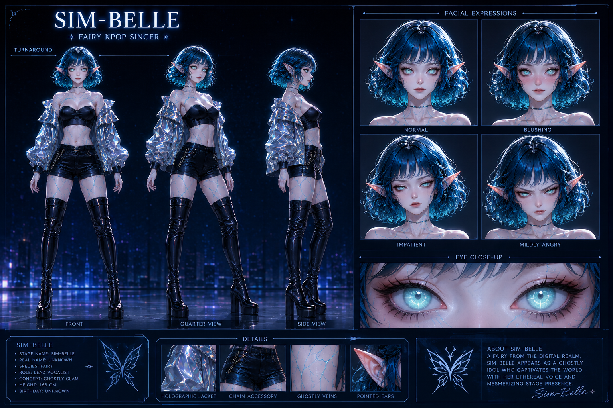
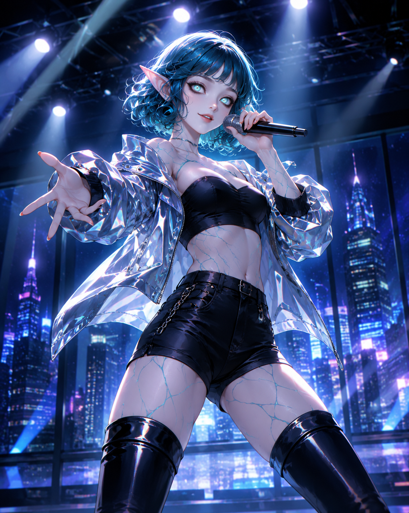
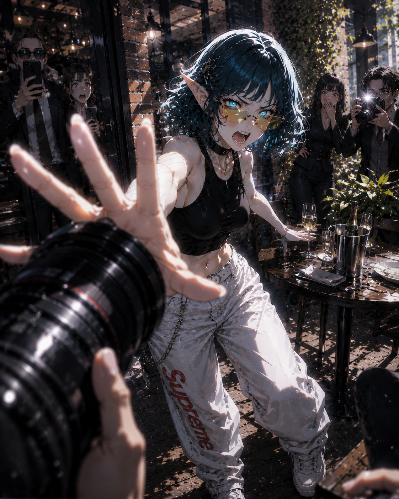
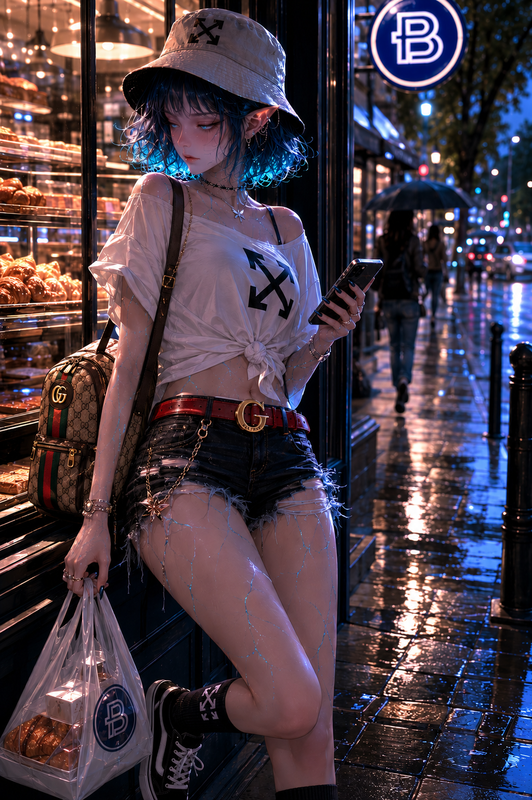
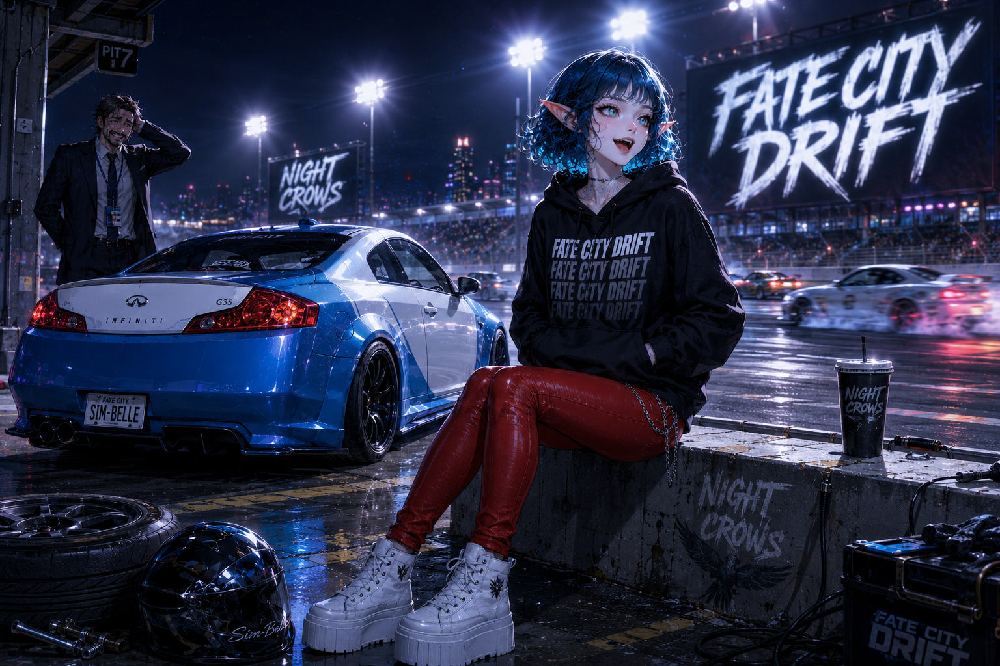
Sim-Belle arrived in Fate City’s pop scene like she’d been launched out of a cannon, and she has not slowed down since. The voice is real, the songs chart, and the persona — sharp-tongued, unapologetic, dangerous to be around — sells just as hard as the music does. Whether the persona and the person are the same thing is a question her collaborators have very different answers to, usually depending on how recently they worked with her.
More than one producer, choreographer, and opening act has used the word “difficult.” None of them have stopped wanting to work with her, because difficult sells, and Sim-Belle understands that math better than the people complaining about it.
Almost nobody outside her inner circle knows the name Cynthia Belle, and fewer still have seen what she looks like when nobody’s pointing a lens at her: quiet, a little worn down, dragging a bakery bag through the rain at midnight because it’s easier than being recognized in daylight. The temper is real. So is the exhaustion underneath it. One of the only people who gets both versions of her, unfiltered, is Ivara — a friendship from before any of this that has somehow survived everything this has become.
What genuinely lights Sim-Belle up isn’t the music industry’s usual machinery — it’s Fate City’s night life itself: the racing, the rumors, the rifts, the danger that the rest of the city tries to stay licensed and insured against. Every bit of it is content to her, and good content for the bad-girl image she’s spent two years building. She doesn’t need a reason to get involved in something reckless. The reputational upside is reason enough on its own.
Sim-Belle didn’t discover the Night Crows for a music video or a press stunt. She found them the way anyone does — through Ivara, long before the cameras cared — and Durn Thalgor and Tivy Glintspark are some of the only people in her life who liked her before they knew who she was. When the crew was hurting for money, it was Sim-Belle who brought the problem to Ivara, who brought it to Vel, who fixed it without a second thought. She has her own car in their pit lane and her name on a license plate to prove it. Nobody at SKahn knows. Nobody at the label knows either.
I don’t chase trouble. Trouble in this city just happens to have excellent taste. Sim-Belle, magazine profile